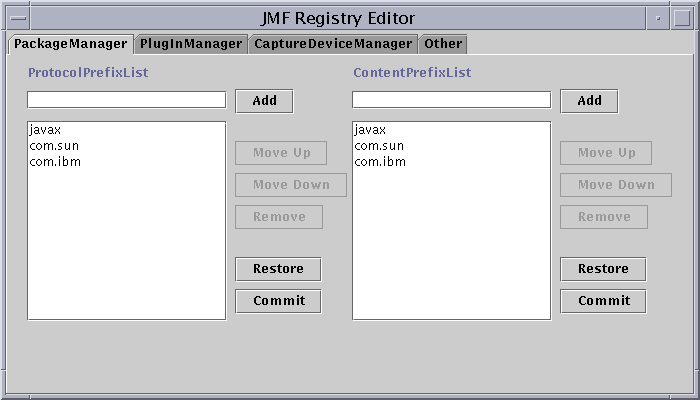
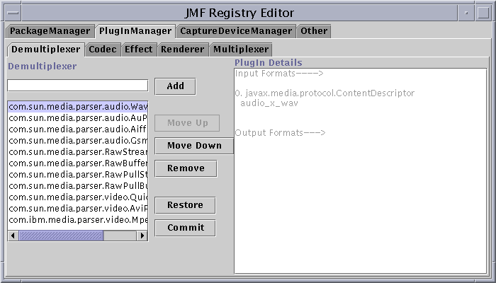
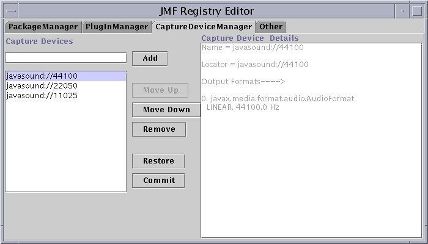

JMFRegistry User's Guide
This guide describes how to use JMFRegistry. JMFRegistry is a stand alone Java application that
you can use to register new DataSources, MediaHandlers, PlugIns, and capture devices with JMF so that they can be used with your JMF 2.0 installation. JMFRegistry also enables you to rearrange the search orders and remove registered extensions.
| Registering Package Prefixes for New Protocols and Media Handlers
|
To use a custom DataSource or MediaHandler with JMF, you must register the package prefix that identifies where the new class is located. (For example, COM.yourbiz.) You can do this with JMFRegistry through the PackageManager tab. Package prefixes for new protocols and MediaHandlers are set separately in the protocol package-prefix list and the content package-prefix list. You can also rearrange the order in which JMF searches installed protocol and media handlers, and remove registered package prefixes from the PackageManager tab.

For more information about how package prefixes are used to locate JMF extensions, see the "Extending JMF" chapter in the JMF API Guide.
To add a package prefix to either the ProtocolPrefix List or ContentPrefix List:
- Open the PackageManager tab in the JMFRegistry Editor window.
- Enter the new path in the ProtocolPrefixList text field.
- Click the Add button.
- To rearrange the search order, select the path you want to move and
click the Move Up or Move Down button.
- Click the Commit button to save your changes. Clicking the Restore button will
revert to the last saved prefix list.
To remove a package prefix from either the ProtocolPrefix List or ContentPrefix List:
- Open the PackageManager tab in the JMFRegistry Editor window.
- Select the search path you want to remove.
- Click the Remove button
- Click the Commit button to save your changes. Clicking the Restore button will
revert to the last saved prefix list.
To use a custom PlugIn with JMF, you must register it with the PlugInManager. You can do this with JMFRegistry through the PlugInManager tab. You can also view the input and/or output formats of a registered plug-in, rearrange the order in which JMF queries plug-ins, and remove registered plug-ins from the PlugInManager tab.

To register a new plug-in:
- Open the PlugInManager tab in the JMF Registry Editor.
- Select the tab for the type of plug-in you are adding. (Demultiplexer, Codec,
Effect, Renderer, or Multiplexer.)
- Enter the plug-in's fully qualified class name in the plug-in text field.
- Click the Add button.
- To rearrange the plug-in search order, select the plug-in you want to move and
click the Move Up or Move Down button.
- Click the Commit button to save your changes. Clicking the Restore button will
revert to the last saved plug-in list.
To remove a plug-in:
- Open the PlugInManager tab in the JMFRegistry Editor window.
- Select the plug-in you want to remove.
- Click the Remove button
- Click the Commit button to save your changes. Clicking the Restore button will
revert to the last saved plug-in list.
| Registering New Capture Devices with JMF
|
To use a particular capture device with JMF, you must register it with the CaptureDeviceManager. You can do this with JMFRegistry through the CaptureDeviceManager tab. You can also rearrange the order in which JMF queries capture devices, and remove registered devices from the CaptureDeviceManager tab.

To register a new capture device:
- Open the CaptureDeviceManager tab in the JMF Registry Editor.
- Enter the capture device in the capture devices text field.
- Click the Add button.
- To rearrange the capture device search order, select the device you want to move and
click the Move Up or Move Down button.
- Click the Commit button to save your changes. Clicking the Restore button will
revert to the last saved capture device list.
To remove a capture device:
- Open the CaptureDeviceManager tab in the JMFRegistry Editor window.
- Select the capture device you want to remove.
- Click the Remove button
- Click the Commit button to save your changes. Clicking the Restore button will
revert to the last saved capture device list.
Copyright © 1995-99 Sun Microsystems, Inc.
All Rights Reserved